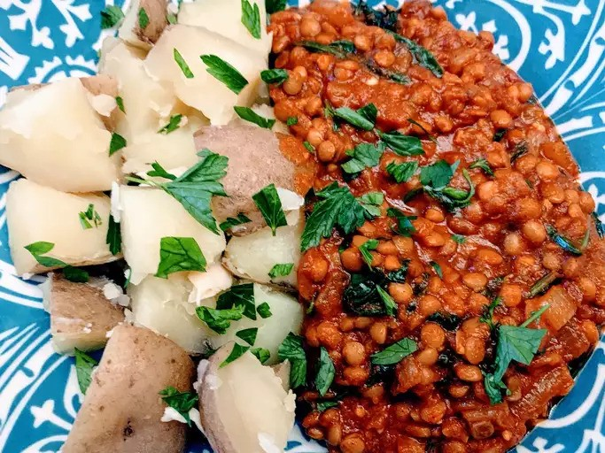

Red Curry

Description
Taken from Allrecipes (submitted by Emma Maher):
This red lentil curry is rich and hearty. It's great as a main meal rather than a
side dish like the more traditional Indian dhal. Don't let the ingredient list faze
you — this is an easy dish to make. This dish is excellent served with basmati rice.
Ingredients
- 2 cups red lentils
- 3 cups water
- 1 tablespoon vegetable oil
- 1 large onion, diced
- 2 tablespoons curry paste
- 1 tablespoon curry powder
- 1 teapsoon ground tumeric
- 1 teaspoon ground cumin
- 1 teaspoon chili powder
- 1 teaspoon salt
- 1 teaspoon white sugar
- 1 teaspoon minced garlic
- 1 teaspoon minced fresh ginger
- 1 can tomato puree
Steps
- Wash lentils in cold water until water runs clear.
- Put lentils in a pot. Bring to a boil then cover and simmer.
- Heat vegetable oil in a large skillet. Cook and stir onions in hot oil.
- Mix rest of ingredients togehter in a large bowl.
- Stir in tomato puree and lentils.
Original Recipe: Red Lentil Curry
Homepage